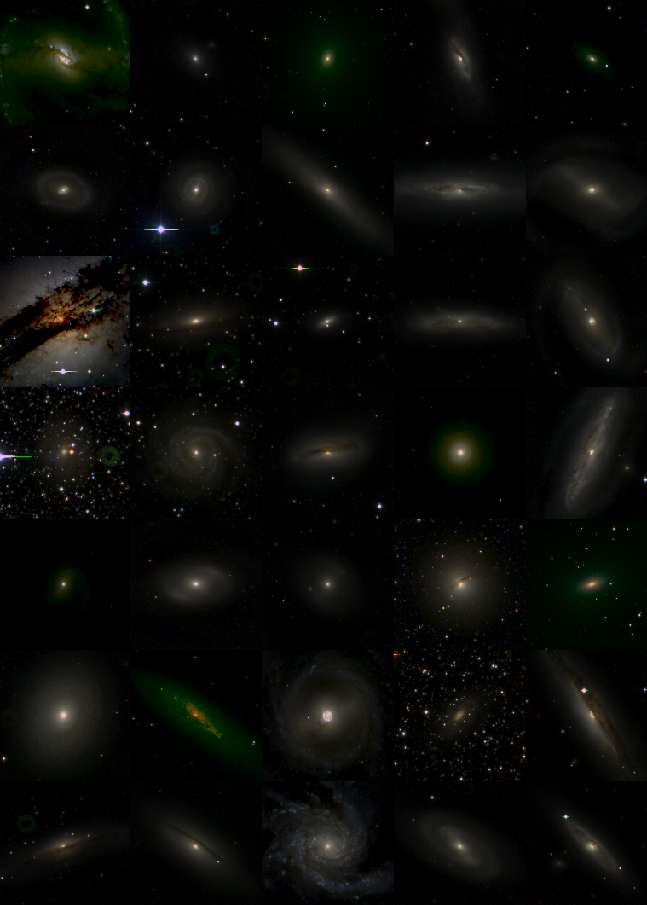

Thesis title: Investigating a minor merger origin of active galactic
nuclei by searching for point sources around galaxies in a controlled sample
Supervisor: Dr. Leonard Burtscher

Summary: Studying the triggering of Active Galactic Nuclei (AGNs) is a key factor in
understanding the evolution of supermassive black holes in the centres of massive galaxies, as well
as the evolution of those galaxies themselves. This
research attempts to test the theory that mass accretion leading to nuclear activity
can be triggered by a minor
merger, by comparing the number of point sources that surround a specially selected,
controlled sample of AGNs and inactive galaxies. An excess of point sources around
AGNs with respect to inactive galaxies could be an indicator of a minor merger origin
of AGNs, as a small satellite merging with a massive galaxy is expected to be observable
as an unresolved point source in an image of the massive galaxy.
The sample that is used in this research is the LLAMA sample, constructed by
Davies et al. (2015),
containing 20 AGNs and 19 inactive galaxies. Images of these galaxies
are obtained using the multi-band imager GROND. The number of point sources
surrounding each galaxy is determined using an automatic detection algorithm that
locates the point sources in each image.
Comparing the average number of detected
sources in the two samples, it is found that the inactive galaxies are on average surrounded
by approximately 230 more sources, which is unexpected. However, it cannot be said with any
statistical significance whether the two samples are really drawn from two different distributions.
A statistical analysis reveals that in order to find out
if this is the case, assuming an expected difference of 5 sources based on minor merger
rates in the local universe, the sample of galaxies should be increased and the noise,
primarily in the form of false detections due to foreground sources, should be reduced.
A rough estimate of the required sample size is calculated, showing that a sample of
500 AGNs and 500 inactive galaxies should be sufficient to perform this study, given
that the noise is decreased as well.
Thesis title:Predictions for soft X-ray line emission from the Warm-Hot Intergalactic
Medium and virtual observations using the Athena X-IFU
Supervisors: Prof. Joop Schaye
and Dr. Sylvia Ploekcinger
Summary: Current observations at low redshift are unable to explain the baryon
density that is predicted by observations of the Cosmic Microwave Background.
A significant fraction of the baryons at low redshift are thought to reside in
the Warm-Hot Intergalactic Medium (WHIM), consisting of gas with temperatures 105 K < T < 107 K.
Detection of this gas is crucial in explaining the “missing” baryon problem,
and one way to detect the WHIM is through soft
X-ray line emission from metals.
In this research, results from the Evolution
and Assembly of GaLaxies and their Environments (EAGLE,
Schaye et al.,
2015) cosmological simulation project are used to make predictions of the soft
X-ray line emission properties of the WHIM, and to create virtual observations
of the WHIM with the X-IFU instrument aboard the Athena satellite, to be launched
in the early 2030s
(Barret et al., 2013).
It is found
that for halos, the relative importance of various emission lines depends on
the halo mass. Also, line emission surface brightness profiles show that the
surface brightness is generally higher in more massive halos, but which line
is most important depends on the halo mass and distance to the center of the
halo. Furthermore, from surface brightness maps of four halos in the
simulation, it was concluded that O VIII is the most important emission line. This
was confirmed by virtual observations with the X-IFU of the same halos, in
each of which the O VIII emission was detectable, and also stronger than the
emission of all other lines. These virtual observations showed that the galactic
foreground plays a significant role in the detectability of different emission
lines, as it is energy dependent. High energy emission lines such as Ne IX,
Mg XI, Fe XVII, Fe XVIII and Fe XIX are only detectable in the two most massive
(and thus hottest) of the selected halos, but in these halos they are good
observational targets, as the galactic foreground signal at these energies is low.
Thesis title: Environment, morphology and star forming characteristics
of extended ultraviolet (XUV) disk hosting galaxies
Supervisor: Dr. Benne Holwerda
Summary: The origin of extended ultraviolet (XUV) disks possessed by some galaxies, indicating outer region star formation,
is still unknown. A generally assumed cause is cold accreting gas streaming along filaments of the Cosmic Web. To
acquire more knowledge about the origin of XUV disks, we investigate the morphology, environment, stellar mass
and star formation of XUV disk galaxies using previous XUV classifications from different studies,
images, colour measurements, environmental and morphological parameters and redshifts. We find that XUV disk galaxies prefer to “snack” gas in groups with
higher number density, lower 4th nearest neighbour distance and lower mass than galaxies without an XUV disk.
Furthermore, we observe a slight preference for XUV disk galaxies, with respect to non-XUV disk galaxies, to be
central galaxies instead of satellites in the dark matter halo. We also find that while the specific star formation rate
(SSFR) of XUV and non-XUV disk galaxies is similar, XUV disk galaxies have a lower star formation rate surface
density (sigma-SFR) than non-XUV disk galaxies. However, we also observe that the sigma-SFR of XUV disk galaxies increases
more with increasing stellar mass than for non-XUV disk galaxies. Lastly we discover that XUV disk galaxies occur
not only in the blue cloud, a galaxy population of high SSFR, but also in the green valley and red sequence, where
specific star formation rates are lower.
The Kaiser Spring Lectures are a yearly series of lectures, organised every spring
at the Old Observatory in Leiden. Every year, renowned astronomical researchers, historians and
scientists in the space industry share their own experience and knowledge. These lectures
are for a general audience, so everyone is invited to learn about interesting astronomical phenomena!
In 2016, I volunteered to make the four lectures run smoothly, and in 2017, I had the
pleasure to be part of the organistion committee of these lectures.
For more information, please visit the Spring Lectures webpage:
http://www.oudesterrewacht.nl/lentelezingen/